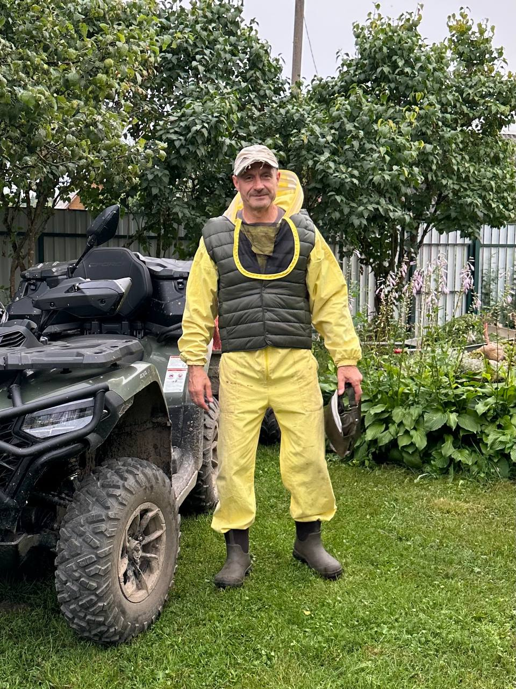
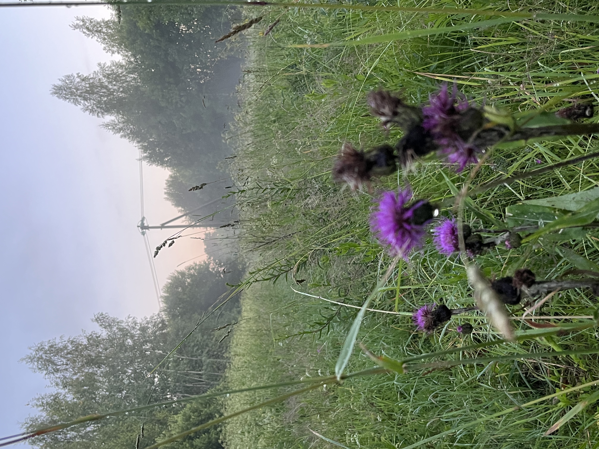
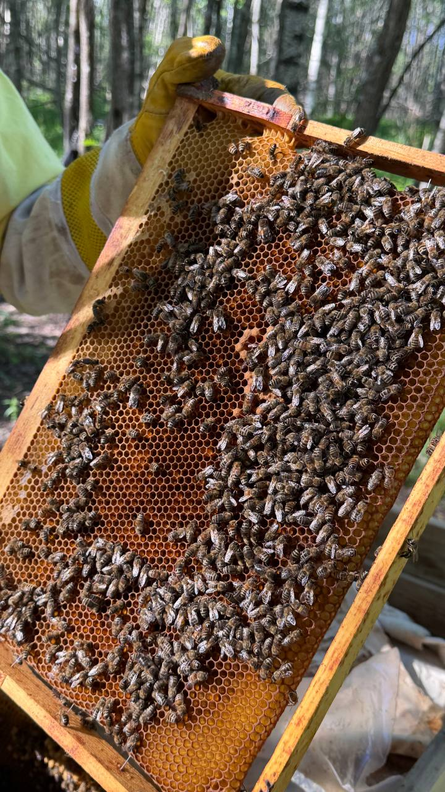
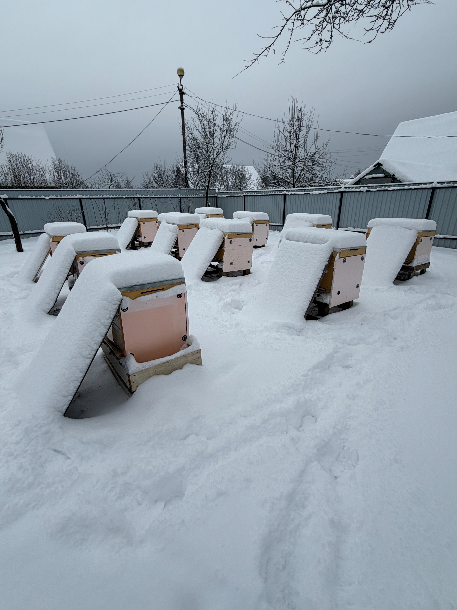
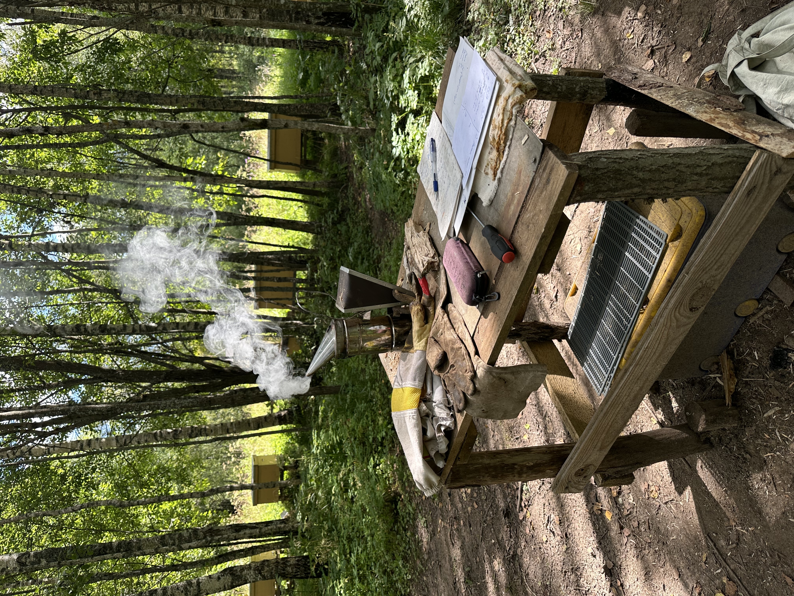
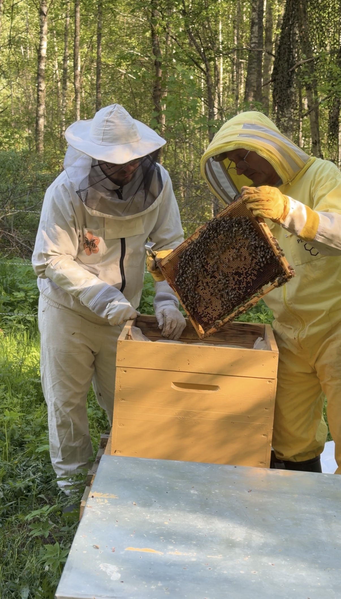
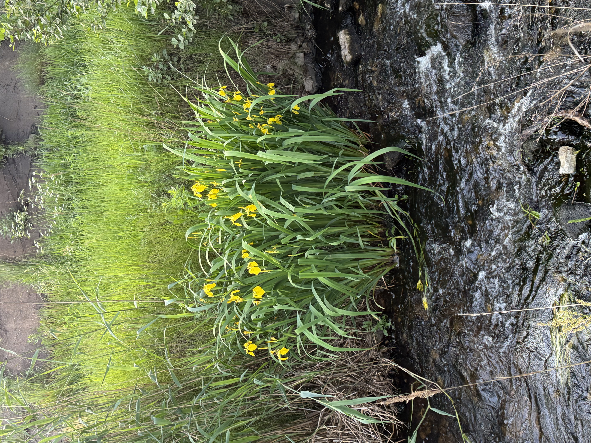
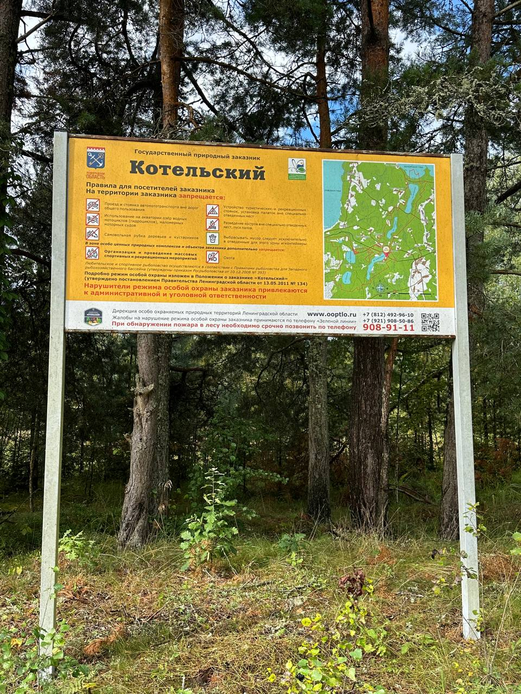

Ароматный мёд с охраняемых угодий Ленинградской области - без нагрева, без добавок, прямо с пасеки.
Мед из заказника
Пасека расположена на границе государственного природного заказника “Котельский”. Здесь нет городской застройки, промышленных и сельскохозяйственных предприятий. Вокруг леса, озера и болота.

Меня зовут Сергей, и у меня отличное хобби - лесная пасека из 20 пчелиных семей.
Весной мы вывозим их в лес, а осенью возвращаем на зимовку в деревню. 6 лет я наблюдаю за этими удивительными и трудолюбивыми насекомыми. Иногда мне кажется, что это инопланетяне шифруются.
от улья до вашей банки
-
Подготовка к медосбору
1
- вывоз пчел в лес;
- наращивание силы семьи;
- замена маток;
- противороевые мероприятия;
-
Медосбор
2
- установка в ульи дополнительных магазинов;
- контроль привеса мёда;
- контроль вентиляции в ульях;
-
откачка мёда
3
- транспортировка рамок в деревню;
- распечатка медовых рамок;
- откачка в центрифуге (медогонка);
Галерея пасеки






Почему наш мёд
Лесное разнотравье - это широкий спектр растений: малина, иван чай, черника, вереск, липа, лесные травы, ягоды и кустарники. Полифлорный лесной мёд обычно дает более сложный, многогранный вкус и аромат в отличие от монофлорных сортов (липовый, гречишный).

Мёд из лесной зоны, как правило, свободен от пестицидов и агрохимии, характерных для полей с монокультурами (подсолнухи, рис и т.д.). Полифлорные лесные меда в среднем содержат более широкий спектр микроэлементов и биологически активных веществ (ферментов).
Стоимость
- Мёд банка 1 литр 1200 руб
- Мёд банка 3 литра 3600 руб
- Мёд в рамке (весовой) 800 руб/кг
Что стоит за банкой/FAQ
Как я могу быть уверен(а), что мед качественный?
Наш мед прошел оценку качества в лаборатории С-ЗИЛ ФГБУ “ВНИИЗЖ”.
Гарантируете ли вы, что мед собран в экологически чистом районе?
Наш мед собирается с пасеки в экологически чистом районе, вдали от промышленных зон и загрязнений, что важно для его чистоты и вкуса.
Подвергается ли ваш мед нагреву или пастеризации?
Мы не нагреваем и не пастеризуем мёд, чтобы максимально сохранить его природные свойства, аромат, вкус и полезные компоненты.
Могу ли я задать вопросы пчеловоду напрямую и узнать дополнительные подробности о сборе меда?
Да, вы можете написать пчеловоду со всеми интересующими Вас вопросами! С радостью ответим на каждый.